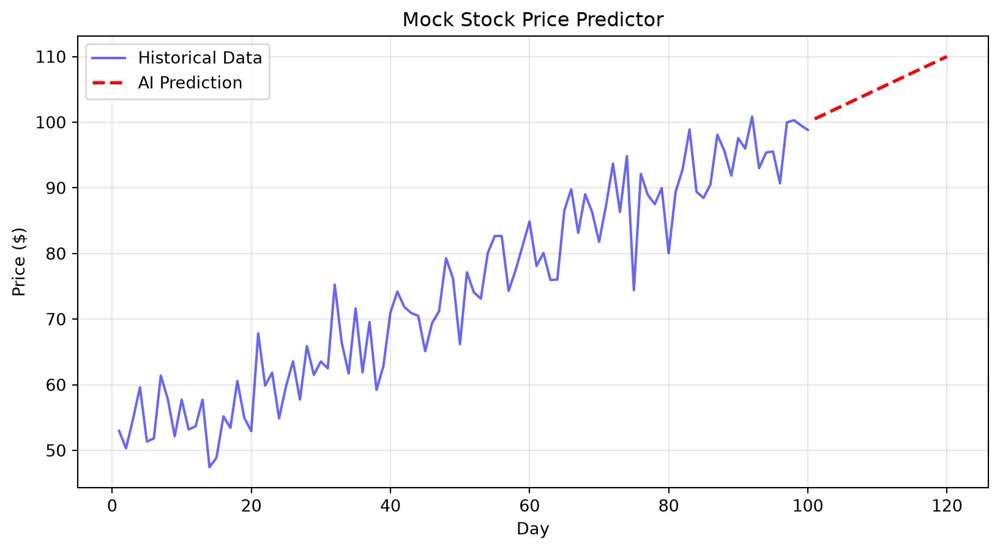

An overview of what Data Science actually means and how the field arrived at its current state.
3.1 1. Introduction to Data Science - Definition
Data Science is the practice of extracting actionable insights from raw information using mathematics, programming, and domain expertise.
It exists because human intuition fails when faced with millions of rows of information. Without Data Science, companies guess what their customers want; with it, they know.
Tip🧠 Analogy — The Master Chef
The everyday thing: Imagine you are a master chef in a massive kitchen.
The mapping: - The raw ingredients arriving at the back door are the raw data. - The kitchen equipment (blenders, ovens) are your programming languages (Python, SQL). - The recipes and culinary techniques are your mathematical algorithms. - The final plated dish is the actionable business insight.
Where it breaks down: A chef eventually runs out of physical ingredients, whereas data can be reused and combined infinitely without being consumed.
3.1.1 How it works
At its core, Data Science involves a simple pipeline: 1. Collect: Gather raw numbers, text, or images. 2. Clean: Remove errors, duplicates, and missing values. 3. Analyze: Find patterns and trends. 4. Predict/Model: Use past patterns to guess future outcomes. 5. Report: Present the findings to decision-makers.
3.1.2 ❓ MCQs
Q1. Which of the following is the most accurate definition of Data Science?
Writing complex software applications for web browsers.
Extracting actionable insights from raw data using math and programming.
Manually reading through customer emails to find complaints.
Installing computer hardware and maintaining servers.
NoteAnswers
A1 — (b). Data Science focuses on finding insights from data. (a) is software engineering, (c) is manual review, and (d) is IT administration.
This definition explains what we do, but to understand why, we must look at how the field grew.
3.2 2. Evolution of Data Science
Data Science evolved from simple pen-and-paper statistics into complex, automated machine learning driven by massive computing power.
It exists in its current form because the sheer volume of data generated today (the “Big Data” boom) made classical statistical methods too slow and manual to be useful on their own.
3.2.1 How it works
The evolution can be broken down into three eras: 1. The Statistical Era (Pre-2000s): Data was small. Statisticians used formulas and calculators to find averages and probabilities on carefully collected samples. 2. The Big Data Era (2000s-2010s): The internet exploded. Suddenly, companies had terabytes of click data. The challenge was simply storing and querying this massive volume of information. 3. The AI/Machine Learning Era (2010s-Present): Storage became cheap, and computing became incredibly fast. Instead of humans querying data, we now train algorithms to find the patterns for us autonomously.
Warning⚠️ The trap of chasing the shiny new thing
“Do not ignore classical statistics just because machine learning is newer.”
A simple average (from the 1900s) often solves a business problem faster and more reliably than a massive neural network (from 2024). Start simple.
3.2.2 ❓ MCQs
Q2. What primary factor drove the transition from classical statistics to modern Data Science?
The invention of the Python programming language.
The desire to make mathematics look cooler.
The explosion of internet data and the availability of cheap, fast computing.
The decline in the number of trained statisticians.
NoteAnswers
A2 — (c). Massive data volumes required new approaches because manual statistical sampling could no longer keep up with the scale of information.
Understanding the history gives us context, but who actually does the work today?
4 Part B — Roles and Applications
Defining the people who work with data and the real-world problems they solve.
4.1 3. Data Science Roles
The modern data team is divided into three main roles: Data Engineers, Data Analysts, and Data Scientists.
This division of labor exists because building a database, interpreting a chart, and training a predictive algorithm require entirely different skill sets. Expecting one person to do all three usually results in mediocre work across the board.
4.1.1 How it works
Role
Core Responsibility
Primary Tool
Output
Data Engineer
Moves and stores data reliably.
SQL, Python, Cloud
A clean, fast database.
Data Analyst
Explains what happened in the past.
SQL, Excel, Tableau
Dashboards and reports.
Data Scientist
Predicts what will happen in the future.
Python, Scikit-Learn
Predictive models.
Tip🧠 Analogy — The Factory
The everyday thing: A car manufacturing plant.
The mapping: - The Data Engineer builds the assembly line and makes sure the metal and plastic arrive safely. - The Data Analyst inspects the cars coming off the line, counting defects and tracking production speed. - The Data Scientist analyzes the aerodynamics to design next year’s faster, more efficient car model.
4.1.2 🌍 Scenarios
Scenario 1 — A marketing team wants to know why sales dropped last month. They need a Data Analyst to look at historical data and create a chart showing where the drop occurred.
Scenario 2 — A bank wants a system that automatically blocks fraudulent credit card swipes in real-time. They need a Data Scientist to build a predictive model that flags suspicious behavior instantly.
4.1.3 ❓ MCQs
Q3. Your company has terabytes of messy log files scattered across ten different servers. Who should you hire to organize this into a clean, centralized database?
Data Scientist
Data Engineer
Data Analyst
Software Developer
NoteAnswers
A3 — (b). A Data Engineer specializes in the infrastructure, movement, and storage of data. A Data Scientist or Analyst would struggle to do their jobs without the Engineer’s foundational work.
Now that we know the roles, what exactly are they building?
4.2 4. Application of Data Sciences
Data Science is applied to optimize logistics, personalize recommendations, detect fraud, and automate decision-making across every major industry.
It is used universally because any process that relies on human guesswork can be made faster and more accurate by finding historical patterns in data.
4.2.1 How it works
Here are four major applications you interact with daily: - Recommendation Systems (Netflix/Amazon): Analyzes millions of users to predict which movie or product you will like next based on your past behavior. - Dynamic Pricing (Uber/Airlines): Adjusts prices in real-time based on current demand, weather, and historical traffic patterns. - Fraud Detection (Banking): Identifies anomalies—if your card is used in New York at 1:00 PM and in London at 1:05 PM, the system flags it instantly. - Healthcare Diagnostics: Image recognition models scan X-rays for tumors with higher accuracy than human radiologists.
4.2.2 ❓ MCQs
Q4. Which of the following is NOT a typical application of Data Science?
Predicting which customers are likely to cancel their subscriptions.
Manually calling customers to ask for their feedback on a new product.
Adjusting the price of a flight based on remaining seats and historical demand.
Suggesting the next song you should listen to on Spotify.
NoteAnswers
A4 — (b). Manually calling customers is a traditional qualitative research method, not a data science application. Data science relies on analyzing large datasets programmatically.
5 Part Demo — The End Goal
To give you a sense of what you will be able to build by the end of this course, let’s look at a live Data Science application. This code generates an interactive dashboard predicting a simple trend (like stock prices or weather temperatures).
Don’t worry if the code looks confusing right now—you will understand every line of this by Session 12.
5.0.1 📘 Examples
Example 1 — A predictive dashboard
import numpy as npimport pandas as pdimport matplotlib.pyplot as plt# 1. Generate some mock historical 'stock' datanp.random.seed(42)days = np.arange(1, 101)# Create a noisy upward trendprices =50+ (days *0.5) + np.random.normal(0, 5, size=100)df = pd.DataFrame({'Day': days, 'Price': prices})# 2. 'Predict' the next 20 days using a simple linear trendfuture_days = np.arange(101, 121)# The true trend without noisefuture_predictions =50+ (future_days *0.5)# 3. Visualize the resultplt.figure(figsize=(10, 5))plt.plot(df['Day'], df['Price'], label='Historical Data', color='blue', alpha=0.6)plt.plot(future_days, future_predictions, label='AI Prediction', color='red', linestyle='dashed', linewidth=2)plt.title("Mock Stock Price Predictor")plt.xlabel("Day")plt.ylabel("Price ($)")plt.legend()plt.grid(True, alpha=0.3)plt.show()

Figure 5.1: A mock predictive model showing historical data and future predictions.
Note✏️ Tasks
Run the cell above to see the output.
In the code above, try changing the noise level from np.random.normal(0, 5, size=100) to np.random.normal(0, 20, size=100). Run the cell again. What happens to the historical data plot?
NoteSolutions
2. When you increase the standard deviation from 5 to 20, the historical data becomes much more scattered and “noisy.” The blue line will jump up and down drastically, simulating a highly volatile stock market.
6 🎯 Session 1 — Tasks
Complete these tasks in order to solidify your understanding.
Task 1 — Role Identification. Look at your current company (or a company you admire, like Spotify). Write down one specific project for a Data Engineer, one for a Data Analyst, and one for a Data Scientist at that company. Report your three projects.